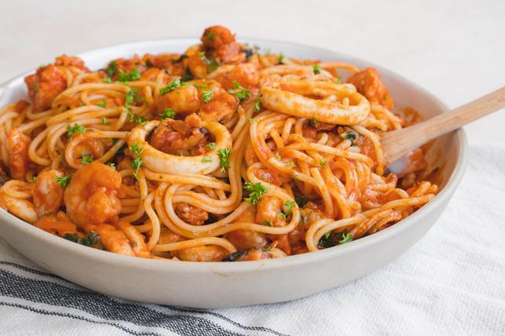

Spaghetti Marinara

Ingredients
- 1 pound spaghetti
- 2 tablespoons olive oil
- 1 onion, diced
- 3 cloves garlic, minced
- 1 (28 oz) can crushed tomatoes
- 1 (6 oz) can tomato paste
- 1 teaspoon dried basil
- 1 teaspoon dried oregano
- Salt and pepper, to taste
- Grated Parmesan cheese, for serving
Instructions
- Cook the spaghetti according to package instructions. Drain and set aside.
- In a large skillet, heat the olive oil over medium heat. Add the onion and sauté until translucent, about 5 minutes.
- Add the garlic and cook for another minute, stirring constantly.
- Pour in the crushed tomatoes, tomato paste, basil, oregano, salt, and pepper. Stir well and let the sauce simmer for about 15 minutes.
- Toss the cooked spaghetti with the marinara sauce until well coated.
- Serve hot, garnished with grated Parmesan cheese.